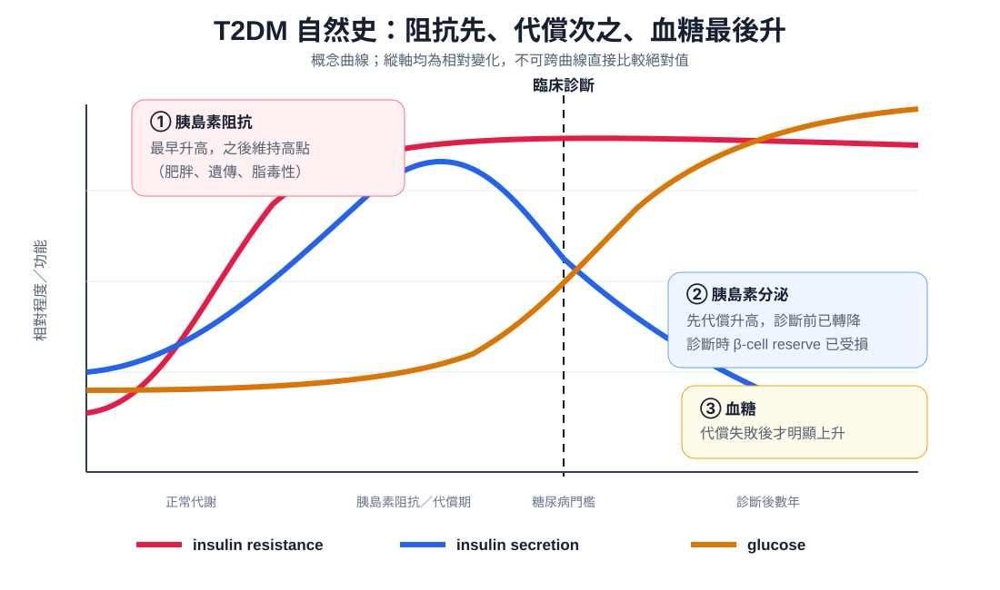
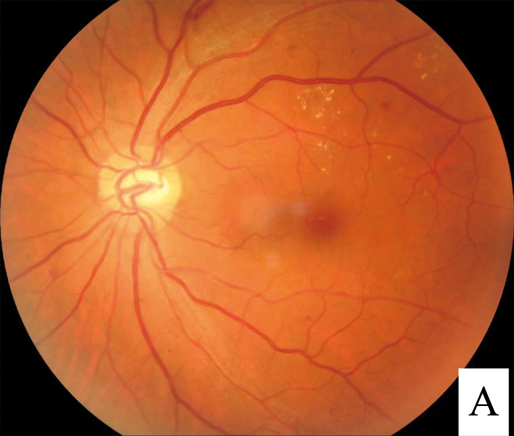
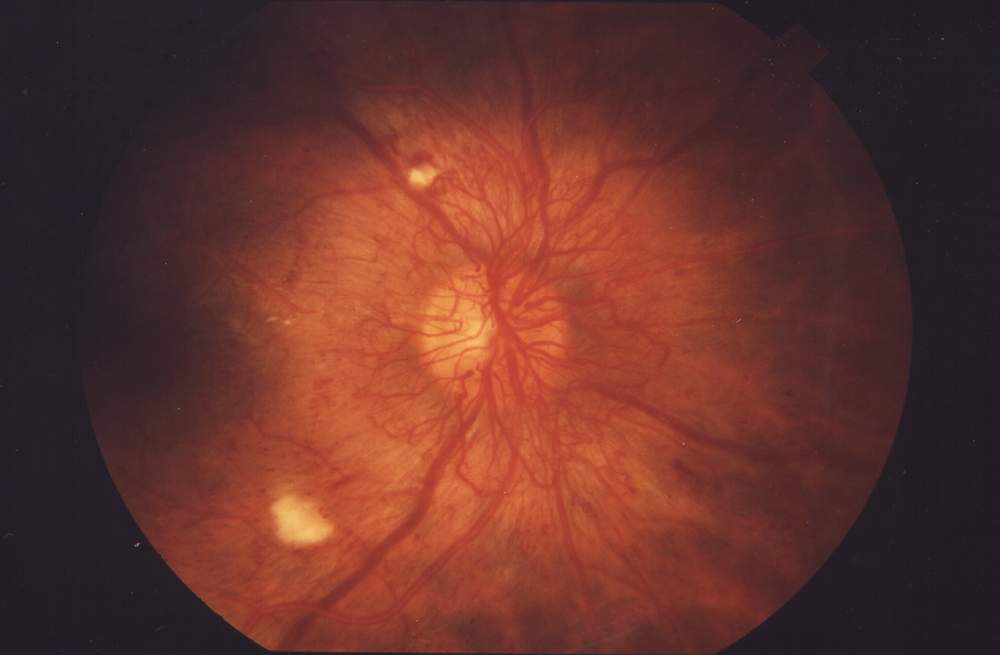

疾病 內分泌
T2DM ｜ 第二型糖尿病 · Type 2 diabetes mellitus 筆記更新 2026-07-28· 整理狀態：可用
加入閱讀清單 其他名稱 6 T2DM · Type 2 diabetes mellitus · 第二型糖尿病 · 糖尿病 · LADA · 潛伏性成人自體免疫糖尿病
一句話總覽
T2DM 的自然史有固定的先後順序 ：insulin resistance 先出現並持續多年 → β 細胞用代償性高胰島素血症把血糖壓住（此時空腹血糖仍正常）→ 代償撐不住，才依序出現 prediabetes 與糖尿病 。因此診斷成立的那一刻，β 細胞功能常已剩約一半 ，而「血中胰島素低」不是 早期特徵；阻抗的位置在受體後 (post-receptor defect) ，不在受體數目。臨床上要做的兩件事：用個別化的 HbA1c 目標盯血糖，用共病決定選哪一類藥。
30 秒行動卡
診斷關鍵 ：HbA1c ≥ 6.5%｜空腹血糖 (FPG) ≥ 126 mg/dL｜OGTT 2 小時 ≥ 200 mg/dL｜隨機血糖 ≥ 200 mg/dL ＋ 典型高血糖症狀或高血糖危象 。無症狀者任何一項達標都必須第二次確認 （重驗同一項或另驗一項）。
治療骨架 ：生活型態是永遠的底層 → 依共病（動脈粥狀硬化心血管疾病／心衰竭／慢性腎病）與體重、低血糖風險選藥 → 藥物細節全在 Antidiabetics 。
自然史：阻抗在前、分泌不足在後
flowchart TD
A["內臟脂肪、游離脂肪酸<br/>慢性發炎"] --> B["胰島素阻抗（受體後缺陷）<br/>GLUT4 轉位失敗、肝糖新生不被抑制"]
B --> D["β 細胞代償、高胰島素血症<br/>血糖仍正常，可維持很多年"]
D --> E["第一相分泌先喪失<br/>β 細胞逐步耗竭"]
E --> F["代償失敗<br/>糖尿病前期 → 糖尿病"]
B --> F
classDef key fill:#263238,stroke:#000,color:#fff,font-weight:bold
class F key
筆記中的流程與關係

阻抗、分泌與血糖的時間先後：insulin resistance 最早上升，insulin secretion 先代償後衰退，glucose 在代償失敗後才明顯上升。曲線為概念圖，不代表三者可用同一縱軸比較絕對值。自製示意圖。
反直覺：早期不是「胰島素不足」，是「胰島素不夠用」
確診前後好幾年，血中胰島素濃度往往是高的，不是低的 ——那是 β 細胞在代償。所以**「胰島素濃度低」不能拿來當 T2DM 的早期特徵，也不能拿來跟 T1DM↗ 分型**（真正低的是 T1DM 與病程很後期的 T2DM）。順序不可對調：阻抗在前、分泌不足在後 ；而診斷成立就代表代償已經失敗，此時 β 細胞功能常已剩約一半 ，而且會繼續往下走——所以多數人最終要加藥、部分人最終需要胰島素，那是自然史，不是「病人不配合」。
阻抗壞在受體後 ：受體數目與結合親和力大致正常，壞的是 IRS-1 磷酸化、PI3K／Akt 訊號與 GLUT4 轉位 。「受體數目減少」或「親和力下降」描述的是極罕見的單基因受體病變（Type A insulin resistance、Rabson-Mendenhall），不是一般 T2DM。 另外分泌與敏感性呈雙曲線反比 （乘積約為固定的 disposition index），所以減重、規律運動後胰島素濃度是往下走的 ——兩者同向上升在邏輯上就不可能。
診斷
項目
正常
Prediabetes（風險狀態，不是疾病） 糖尿病
空腹血糖 (FPG) < 100
100–125 mg/dL ≥ 126 mg/dL （「空腹」＝至少 8 小時未攝取熱量）
OGTT 2 小時 < 140
140–199 mg/dL ≥ 200 mg/dL （75 g 無水葡萄糖；敏感度最高、最早抓到異常，但最麻煩 ；檢查前 3 天每日碳水 ≥ 150 g）
HbA1c < 5.7%
5.7–6.4% ≥ 6.5% （須 NGSP／DCCT 校準；受下方失真情境影響）
隨機血糖 —
—
≥ 200 mg/dL ＋ 典型高血糖症狀或高血糖危象——唯一不需要第二次確認的一條
反直覺：多數人完全沒有症狀，有人在診斷當天就已經有併發症
高血糖要到相當程度（大致超過腎糖閾）才會產生滲透性利尿與「三多一少」（多尿、多渴、多食、體重減輕）；其餘提示是疲倦、視力波動、傷口難癒、反覆黴菌感染、acanthosis nigricans。病人沒有症狀完全不能拿來排除糖尿病 ——這正是 T2DM 需要「主動篩檢」而不是「等症狀上門」的原因，也是為什麼有人以視網膜病變、蛋白尿、ACS 甚至 DKA ／HHS 當第一個表現。診斷當天就要安排眼底與 UACR，不能等一年後。
HbA1c 什麼時候不可信：五種失真情境的方向，以及該改用什麼指標
HbA1c 反映的是「紅血球活多久 × 這段期間泡在多高的糖裡」。只要紅血球壽命或血紅素結構被動到，這個數字就不代表血糖 ：
① 紅血球壽命縮短 → 假性偏低 ：溶血性貧血、脾功能亢進、近期輸血、使用 erythropoietin 或鐵劑／維生素 B12 治療中的恢復期貧血（Anemia ）。② 更新變慢／壽命延長 → 假性偏高 ：未治療的缺鐵性貧血 （方向確定偏高，補鐵後 HbA1c 會下降）、B12／葉酸缺乏、脾切除後 。③ 慢性腎病 ：carbamylated hemoglobin 干擾檢驗、紅血球壽命縮短、又常合併貧血與 EPO 治療——兩個方向都可能，等於不可靠 。④ 血紅素變異（thalassemia、sickle cell 等） ：依檢驗方法可能被高估、低估甚至測不出來，台灣 thalassemia 帶因並不罕見，要有這根弦 。⑤ 懷孕 ：紅血球更新加快、血漿容積擴張，HbA1c 偏低且反應太慢，妊娠糖尿病不用 HbA1c 診斷，用 OGTT 。
該怎麼辦 ：改用能直接看到血糖 的工具——fructosamine／glycated albumin （反映 2–3 週，但受低白蛋白影響，腎病症候群與營養不良者要打折），或 CGM 的 time in range 與 glucose management indicator ＋ 自我血糖監測。進階慢性腎病者以 CGM 最可靠 ，因為它完全不受血液學變數影響。
治療
① 生活型態是永遠的底層，不會被藥取代 ：飲食調整、規律運動、體重管理 、戒菸、睡眠。體重減 5–10% 就能明顯改善血糖與血壓 ，減得更多有機會讓部分早期病人緩解。② 選藥先問共病，再問血糖 ：合併心衰竭（Heart failure ）或慢性腎病 → 優先 SGLT2 inhibitor；合併動脈粥狀硬化心血管疾病或需要顯著減重 → 優先 GLP-1 receptor agonist。這兩個適應症已與 HbA1c 高低脫鉤——就算血糖達標也該用。 其餘以 metformin 為多數人的起手，再依體重、低血糖風險、腎功能、價格調整；升級時機與順序、機轉、劑量與副作用全在 Antidiabetics 。共病要一起管：血脂 → Statin 、血壓、次級預防的 Antiplatelet 、戒菸——大血管的減災，血脂與血壓的貢獻不亞於血糖 。
HbA1c 目標必須個別化——「一律 < 7.0%」是錯的
一般成人 < 7.0% 只是預設起點，不是所有人的目標值。可以更嚴（< 6.5%） ：病程短、預期壽命長、無明顯心血管疾病、用不易造成低血糖的藥就能達標 的人。應該放寬（< 8.0% 或更寬） ：有嚴重低血糖病史、預期壽命有限、已有進階併發症、多重共病或衰弱的長者 ——目標改成「避免高血糖症狀與急性併發症、避免低血糖 」，而不是追一個數字。
判準是年齡、共病、預期壽命、低血糖風險 四項。看到「不論、一律、皆」這種寫法就要警覺 ——血糖、血壓、LDL 的目標沒有一個是統一的。
併發症
分類
病變
怎麼抓
關鍵一句
微血管 Retinopathy 視網膜病變 診斷當下就做散瞳眼底檢查 ，之後原則上每年一次（間隔調整見上方 callout）長期是成人失明的主因之一；增殖期需雷射或 anti-VEGF
微血管 Nephropathy 腎病變 每年 urine albumin-to-creatinine ratio (UACR) ＋ eGFR 判讀見 UPCR UACR 。UACR ≥ 30 mg/g 即為異常，但需在 3–6 個月內重複確認 （運動、發燒、感染、月經都會假陽性）
微血管 Neuropathy 神經病變 每年 10 g monofilament ＋ 震動覺／踝反射
最常見是遠端對稱性多發性神經病變（襪套式）。自主神經病變會抹掉低血糖與心肌缺血的警訊
大血管 CAD ／ACS 、腦血管疾病症狀詢問 ＋ 血壓血脂控制；合併 Atrial fibrillation 者另需抗凝（DOAC ）
心血管疾病是主要死因 ；糖尿病患者的心肌梗塞可以完全不痛
大血管 Peripheral artery disease (PAD) 足背／脛後動脈搏動、ankle-brachial index (ABI) 間歇性跛行、傷口不癒；是糖尿病足預後最關鍵的一塊
糖尿病足不是單純的神經病變——它是微血管與大血管一起出事
三個因素疊加 ：① 神經病變（微血管） ——感覺喪失，踩到釘子、鞋子磨破皮都不知道，加上足部變形與皮膚乾裂。② 周邊動脈疾病 (PAD)（大血管） ——血流不夠，傷口癒合不了，抗生素也送不進去。③ 感染 ——破口後快速深入，可達骨髓炎。所以「糖尿病足屬於微血管併發症」是錯的敘述，「屬於大血管併發症」也是錯的——它兩者都是。
臨床直接後果 ：評估必須同時包含「感覺」與「血流」 。只做 monofilament 而不摸脈搏／不做 ABI，會漏掉真正決定會不會截肢的那一半。每次門診都該脫襪子看腳。
非增殖期 (NPDR) 增殖期 (PDR)


microaneurysm、點狀／斑狀出血與 hard exudate；尚無新生血管
視網膜表面形成脆弱的新生血管與纖維組織，容易玻璃體出血
分界只問一句：「有沒有 neovascularization？」左圖：Hao et al., 2022，Figure 1A（Wikimedia Commons ，CC BY 4.0）；右圖：National Eye Institute／NIH EDA01（Wikimedia Commons ，public domain）。
禁忌與相關連結
絕對不可
情境
絕對不可
為什麼
該做什麼
高齡、衰弱、有嚴重低血糖病史、預期壽命有限
一律套用 HbA1c < 7.0% 並為此加藥
低血糖的傷害在這群人身上大於高血糖 ——跌倒、心律不整、失智加速放寬到 < 8.0% 或更寬 ，改用不易低血糖的藥，目標設為避免症狀與急性併發症
貧血、溶血、近期輸血、慢性腎病、血紅素變異、懷孕
只憑 HbA1c 判斷控制好壞或做診斷
紅血球壽命或血紅素結構被動到，數字與真實血糖脫鉤 ，兩個方向都可能
改看 fructosamine／glycated albumin 或 CGM ＋ 自我血糖監測 ；懷孕用 OGTT 診斷
成人高血糖但偏瘦、無代謝症候群、口服藥迅速失效
直接當 T2DM 給 sulfonylurea
很可能是 LADA ；SU 逼一群正在被免疫破壞的 β 細胞加班，加速衰竭
驗 anti-GAD65 ＋ C-peptide ；改用 metformin ± 早期胰島素
糖尿病足潰瘍
只做感覺評估就開始換藥、清創
周邊動脈疾病才是決定癒合與截肢的一半 ，血流不夠時清創反而惡化同時摸脈搏、做 ABI ＋ 評估感染深度與骨髓炎 ，血流不足者轉血管科
無症狀者單次檢驗達標
直接診斷並開藥
單次檢驗有分析與生物變異，會造成過度診斷
重驗同一項或另驗一項 ；只有「隨機 ≥ 200 ＋ 典型症狀」可一次定案
50 歲後新發糖尿病 ＋ 不明體重減輕、腹背痛
當成一般 T2DM 收案追蹤
可能是 Pancreatic cancer
影像評估胰臟；別讓「新發糖尿病」的合理解釋掩蓋掉真正的病